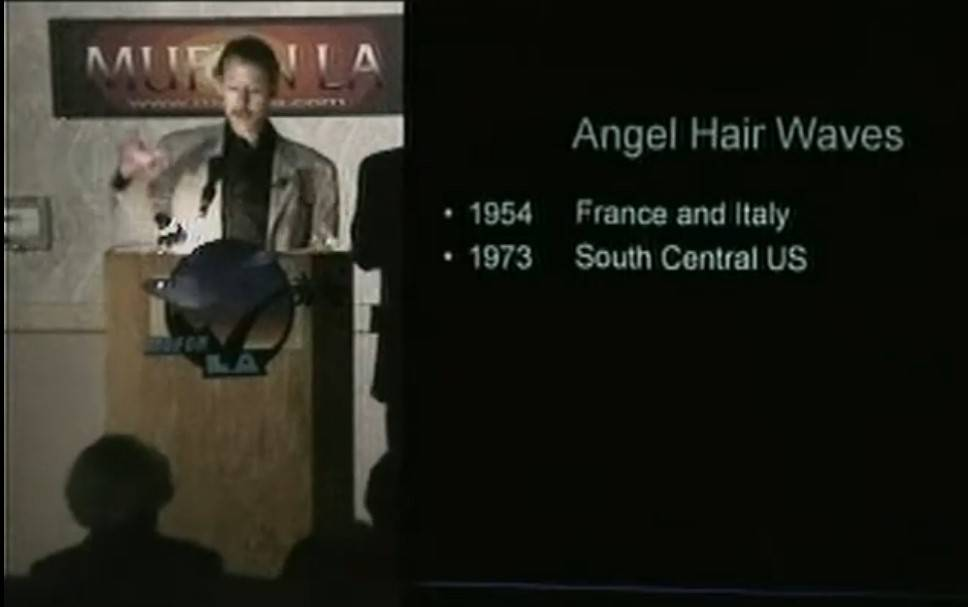
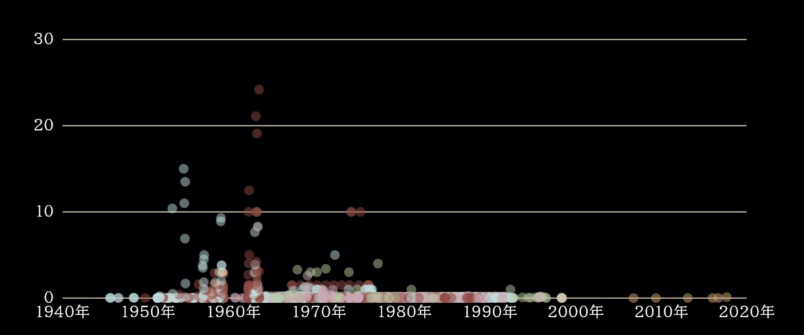

Brian Boldman : Angel Hair が多発したのは 1954年と 1973年 （途中2）
 
履歴
(2023-06-29) 追加。文字起こし＋日本語訳
(2023-06-18) 作成。 ❑ Brian Boldman : Angel Hair が多発したのは 1954年と 1973年 （途中1） (2023-06-18)
(2023-06-18 begin)
前置き
初耳。
手抜き
36:40 AH 事件の多発した年は 1954, 1973
コメント
確かに 1973年にはペンシルベニア州で UFO/Bigfoot の目撃事例が異常に多発し、当時は Stan Gordon がそれらを精力的に調査していた。
1954, 1973 と聴きもしや…と思いざっと検索して見つけたのが UFO とは全く無関係な事象のグラフ（下）。横軸の数値が読み取りづらいが、1953年、1973年あたりにピークがあるように見える。1952年には首都、ワシントンD.C. に UFO が出現し大騒ぎとなった。1962年あたりに最大ピークがあるが、その頃にアメリカで最初に報道された abduction 事件（Betty/Barney Hill 事件）が起きている。
実際、下のグラフの事象が UFO/AH 事件多発と相関する理由を合理的に説明するのは極めて容易。だが、単なる偶然の一致の可能性もありうる。それゆえ、下のグラフが何の事象を扱ったものなのかについての説明はここでは保留し、より多くのデータを集めた上でいつか話題に取り上げたい。勘の良い人なら、以下の動画を見るなり、本日の別記事の日本語訳を読めば、下のグラフが何であるかにすぐ気づく筈なので、簡単なパズルとして提示しておく。
講演動画(1:16:55)
Brian Boldman (01-18-05) The Mystery of Angel Hair
memo
Feb 11, 2015
(2023-06-18 end)
(2023-06-29 begin)
Whisper AI(large-v2 model) + DeepL
それは本当に良いものです。いい人たちが関わっているんだ。では、次のスライドをお願いします。では、このことについてお話します。エンジェルヘアーウェーブです。 UFOに詳しい方なら、UFOには波があることをご存じでしょう。活動することもあれば、活動しないこともある。来ては去っていくのです。エンジェルヘアーも同じです。ただ、エンジェルヘアーには1つだけ小さな違いがあります。1954年、フランスとイタリア、1973年、エンジェルヘアーとほとんど変わりません。 (00:36:58)
1954年にはフランスとイタリアで、1973年にはアメリカ中南部で、エンジェルヘアーの波が、UFOの波と同時に起こっていることがわかります。まさに同時進行です。次のスライドをご覧ください。 ラリー・ハッチのUFOデータベースには、何万件もの事例があります。 彼のデータを使っています。破線は、長年にわたるUFO目撃の強さを示しています。 (00:37:29)
これは、47年から2000年までのものです。さて、少し説明しなければならないことがあります。 エンジェルヘアーに比べれば、UFO事件は非常に多いので、エンジェルヘアー事件はUFO事件に比べれば、比較的まれです。このことも、エンジェルヘアーが重要視されなかったり、誰も見向きもしなかったりした理由です。ここ数十年、私たちはただ、あるいは誰も、レアケースであるがゆえに、それらに目を向けてこなかったのです。 (00:37:53)
ここ数十年、私たちは本当に一握りしか持っていないが、良いものも持っている。しかし、私はこのチャートを2つのグリッドに分けなければなりませんでした。 ここではUFOの件数が1200件まで増えていて、UFOの件数が70件くらいまで増えていますよね？そんなによく見えないんですけどね。しかし、ここ、1954年、赤は、これはエンジェルヘアーケースです。 (00:38:17)
イタリアとフランスで、その波と同時に、大きなスパイクが起きています。彼らがUFOを見たのと同時に、このようなものがあちこちに落ちていたのです。また、73年にはスパイクがありました。 これは本当にベストなチャートではありません。やり直した方がいいかもしれませんね。次のスライドをご覧ください。さて、1954年ですが、これは1954年の事件です。ローマで起きた事件です。これで吹っ切れるしかないですね。次のスライドをどうぞ。 (00:38:44)
このように、このようなものが報告されているのです。綿やウールの細かい粒子が電話線にぶら下がっているのが見えるのです。まさに古典的なものです。これは、「これでいい」ということを示すためのものです。 1954年、イタリアで天使の髪の毛の事件がありました。さて、これがその証拠です。UFOの波と天使の髪の波がどのように同時進行しているか、この資料でお分かりいただけるでしょう。これはCISUのものですが、UFOの波とエンジェルヘアーの波がどのように同時進行しているのかがわかりませんね。 (00:39:22)
これはCISUからです、今、私はイタリア語を話すことができませんが、それはイタリアUFO研究センターです。これはCISUからで、イタリア語はできませんが、イタリアのUFO研究センターです。これは10月中の事件報告です。これは10月1日から11月末までのものです。 (00:39:34)
マゼンタはイタリアの全案件です。青は、報告されたイタリアのエンジェルヘアケースです。 完璧に並んでいる、まさに完璧に。そして、この前も後もほとんどありません。 では、次のスライドです。1973年、アメリカで起こりました。アメリカ中南部は、本当に大変でした。 10月の数日間に10件以上の事例が発生しました。また、10月というのは、かなり顕著に発生する月であることもお伝えしておかなければなりません。 (00:40:14)
10月がかなり目立つ月であることを再度述べておきます。そのため、多くの人が、風船クモに違いない、と信じています。しかし、その理由は、これらを作り出す工作機械が、乾燥した空気を必要とするからだと思います。湿度が低くないとダメなんです。ドアノブに衝撃を受けるのと同じで、故郷では寒くて乾燥していると、本当に衝撃を受けることがあるんです。でも、夏場、湿度が高いときは、本当にショックを受けることがあります。 (00:40:43)
しかし、夏場、湿度が高いと、湿度のせいで電荷が散逸してしまうんです。だから、10月にピークがあるのでしょう。 しかし、ここで、指摘したいことがありました。そこにいるこの男は何なのか？エドワーズ知事は、軍曹を見かけたことはないかと尋ねた。彼は、いや、まったく飲みません、と答えた。 ただ、典型的な返事である。しかし、それが一気に崩れ落ちた。次のスライドに行きましょう。 (00:41:12)
さて、ここに報告されています。落下しています。しかし、落下して消えてしまったと報告されています（いわゆる消失）。実際に昇華したことが分かっています。次のスライドをご覧ください。これもニュースの切り抜きです。 澄み切った青空から、奇妙な、膜のような物質が降ってきた。湿度の低い日の典型的な例ですね。本当に、典型的なケースとして、UFOは秋の晴れた日に目撃されるのです。 (00:41:46)
本当に、古典的なケースがそうであるように、UFOは、晴れた秋の日に見られ、彼らはこのようなものを排出します。そしてそれは通常、彼らが加速するときに起こります。その時、最も多く目撃されています。これはどうやら推進力と関係があるようです。UFOが操縦を始めたという目撃情報が、最終的に20件、22件あったんです。もし、UFOが操縦を始めたと目撃者が報告したケースが、最後に数えて22件あったとしたら。 (00:42:12)
もしUFOがホバリングしていたなら、UFOは操縦を始め、このようなものが現れ始めるか、あるいはオハイオ州メアリスビルの事件のように、学校の上空で飛び立つでしょう。飛び立つと、このようなものが背中から放出されるのです。 しかし、次のスライドをご覧ください。これは古いNICAPで、古いNICAPをご存知の方は、But, oh, let's go to the next slide. (00:42:35)
これは古いNICAPです。古いNICAPの記録カードに詳しい方、アン・ドラフルは知っていますが、この事件はイリノイ州ハミルトンで起きたものです。この下の付帯事項は非常に興味深いものです。そこです。触ると溶けてしまうこの物質を、地下のビリヤード台の上に置いておいた。翌朝、それは完全に崩壊していました。これはハミルトン、えーと、10月19日、その日の朝、完全に崩壊してしまったと思います。 (00:43:07)
これはハミルトン、えーと、10月19日、だったと思うんだけど、18日だったかな。まあとにかく、18日か19日あたりは、とにかくエンジェルヘアーが猛威を振るっていた。 (00:43:16)
あと、ヒクソン・パーカーの誘拐事件が起こったのもその頃で、これは面白いと思う。 あと、歴史上同じ週に他に何があったかというと、次はコイン事件です。オハイオ州マンスフィールドの上空を飛んでいた航空自衛隊のヘリコプターが、とんでもないことに遭遇したのです。ヘリコプターの操縦に詳しい方ならわかると思いますが、ヘリコプターにはコレクティブピッチレバーというものがあり、これで実際にヘリコプターを上下させ、ブレードのピッチを変えます。 (00:43:51)
そして、彼らはこのコレクティブピッチを完全に底上げしていたのです。しかし、このUFOは彼らの上空に見え、彼らはUFOに向かって吸い上げられたのです。コレクティブボトムで実際に高度を上げたのです。信じられない話です。 しかし、この事件は、実はナショナル・エンクワイアラー誌が、その年の最も印象的な事件として5,000ドルの賞を与えたんです。しかし、この10月18日の事件では、その年の最も印象的な事件として、すべての天使が選ばれたのです。 (00:44:20)
しかし、この10月18日の出来事、それは、これらの天使の髪の事件は、ちょうどその時、米国南中央のセントラルパークで起こったのです。さて、次のスライドをご覧ください。これは、すべての総計の内訳です。これは、1947年から2000年まで、私が担当した症例の総数です。このうち40％のケースでは、1947年から2000年だと思いますが、ここが重要なポイントであることがおわかりいただけると思います。 (00:44:52)
これらのケースの40％で、今215件くらいだと思いますが、昇華が報告されており、UFOと同時に見られたエンジェルヘアは57％です。 ですから、これは高い、実際に統計的に有意な数字なのです。 また、これは物件ごとの月別の内訳ですが、10月と11月に大きなピークがあります。しかし、もし風船を飛ばすクモなら、4月と5月にはなぜ見られないのでしょうか。4月は春に本当に風船を飛ばす時期なので、何も見られないのです。 (00:45:27)
しかし、ここで何が起こったのでしょうか？これらの線は、10月に起こった1954年と73年の巨大な波のために歪んでいます。つまり、これらの症例の多くは、1954年のフランスとイタリアの波と、73年のアメリカの波によるものなのです。では、次のスライドをご覧ください。さて、ここからは最新の話になります。トム・ブリュワーという人物が、私が本当に最新の情報を提供したいと思うようなことをやってくれました。 (00:45:58)
It's really a good one. Good people involved with it. Okay, next slide, please. Now, I'm going to talk about this. Angel hair waves. If you're familiar with UFOs at all, you know that UFOs come in waves. You know you can have a whole lot of activity, no activity. They come and they go. Angel hair is the same way. There's just one little difference with angel hair. In 1954, I can read there, France and Italy, in 1973, little difference with angel hair. (00:36:58)
In 1954, I can read there, France and Italy, in 1973, South Central U.S., the angel hair wave, all these cases that happened, were concurrent with the UFO wave. Exactly concurrent. Next slide, please. Now, this shows you, Larry Hatch has a UFO database that has tens of thousands of cases in it. I've used his data here. The dashed line shows you the intensity of UFO sightings over the years. (00:37:29)
This is from, what, 47 to 2000. Now, I have to explain this a little bit. Because there's so many UFO cases compared to angel hair cases, angel hair cases are relatively rare compared to UFO cases. That's another reason they've been kind of blown off as not important or nobody's looked at them because they are rare cases. In the last couple of decades, we've only or nobody's looked at them because they are rare cases. (00:37:53)
In the last couple of decades, we've only had really a handful, but we've had some good ones. But I had to split the chart into two grids. You've got the number of UFO cases here going up to 1200 and UFO cases going up to, what is that, 70? I can't really see it that good. But here, 1954, red is, these are the angel hair cases. (00:38:17)
There's a huge spike, right concurrent with that wave in Italy and France. At the same time they were seeing UFOs, this stuff was falling all over the place. And also, there was a spike in 73. This is really not the best chart. I'll probably need to redo that. Next slide, please. Now, 1954, this is a case from 1954. It happened in Rome. I've got to blow up with that. Next slide. (00:38:44)
And there you see, this stuff's reported. They see it, fine cotton or wool particles hanging on the telephone wire. It's just classic. And that's just to show, there you go, that's fine. 1954, they did have angel hair cases in Italy. Now here, this is telling. This right here will show you how the UFO wave and angel hair wave are concurrent. This is from the CISU, now I can't you how the UFO wave and angel hair wave are concurrent. (00:39:22)
This is from the CISU, now I can't speak Italian, but it's the Italian UFO Study Center. And that's the magenta. That's their report of cases during this October. This is October 1st here, down to the end of November. (00:39:34)
The magenta is all the Italian cases. The blue are the reported Italian angel hair cases. They line up perfectly, just absolutely perfect. And there's hardly any before this or after. Okay, next slide. In 1973, it happened in the U.S. The whole South Central U.S. was just really, I got over a dozen cases that just happened in a few day period of time here in October. And again, I should mention that October is a pretty prominent month for it, in October. (00:40:14)
And again, I should mention that October is a pretty prominent month for it, and that has led a lot of people to believe that, well, it's got to be balloon spiders, because your annual peak is in October. But I think the reason is, is because whatever, the craft that produce these, they need dry air. They need low humidity. It's just like, you know, when you get a shock on a doorknob, well, I know back home when it's cold and dry, you can really get shocked. But in the summertime, when there's a lot of humidity, you can really get shocked. (00:40:43)
But in the summertime, when there's a lot of humidity, the charges dissipate out because of the humidity. So that's probably why we have an October peak. But here, there was something here I wanted to point out. What is this guy there? Governor Edwards asked if he had seen any of the sergeants. He replied, no, I don't drink at all. Just a typical reply. But it fell all over. Let's go to the next slide. (00:41:12)
Okay, it's reported here. It's fallen, and I didn't do a blowup of this. I probably should, but it was reported to fall and disappear, what they call disappear. We know that it actually sublimated. Next slide, please. And this is just another news clipping. Odd, filmy substance drifted down from a clear blue sky. See, that's typical of a low humidity day. Really, like a classic case would be, UFOs are seen on a clear fall day, day. (00:41:46)
Really, like a classic case would be, UFOs are seen on a clear fall day, and they discharge this stuff. And it usually happens when they accelerate. When they shoot off, that's when it's been seen the most. It actually apparently has something to do with propulsion, I think, because it's been reported. I've got, oh gosh, I guess probably 20, I think 22 cases at last count, where witnesses reported the UFOs started to maneuver. If they had been 22 cases at last count, where witnesses reported the UFOs started to maneuver. (00:42:12)
If they had been hovering, they would start to maneuver, and this stuff would start to appear, or they would just shoot off, like the Marysville, Ohio case over the school. They shoot off, and this stuff would be ejected out of the back when it did so. But, oh, let's go to the next slide. This is an old NICAP, if you're familiar with old NICAPBut, oh, let's go to the next slide. (00:42:35)
This is an old NICAP, if you're familiar with old NICAP record cards, I know Ann Druffle is, this case happened in Hamilton, Illinois. I've got a blow up of, the incidental down here is very interesting. There. They took some of this stuff, which melted as it was touched, what remained was placed on a pool table in a basement. The next morning, it completely disintegrated. This is Hamilton, let's see, October 19th, I think that morning, it completely disintegrated. (00:43:07)
This is Hamilton, let's see, October 19th, I think that was, or the 18th. Well, anyway, all around the 18th or the 19th, angel hair was just rampant. (00:43:16)
Also, that's about the time the Hickson-Parker abduction happened, which I think is interesting. And also, what else happened during that same week in history, next, the Coyne case. If you guys are familiar with this, Air National Guard helicopter flying over Mansfield, Ohio had an encounter which is just tremendous. If you're familiar with how helicopters operate, there's a collective pitch lever that they actually raise the helicopter up and down with, they change the pitch of the blades. (00:43:51)
And they had this collective pitch fully bottomed out. The thing should have been in a power dive to the ground, but this UFO was seen over the top of them and it actually sucked them up toward it. They actually gained altitude with the collective bottom. It's just incredible. But this case, actually the National Enquirer, well, it gave them a $5,000 prize as being the most impressive case of the year that year. But this October 18th thing, it just, all these angel most impressive case of the year that year. (00:44:20)
But this October 18th thing, it just, all these angel hair cases happened right then in Central Park, South Central U.S., just incredible. Okay, next slide please. And this just shows you, this is a kind of a breakdown of all the totals, just aggregate totals here. This is the total number of cases that I had in this particular, this is from 1947 to 2000, and you can see this is the important point. In 40% of these cases, I think it's 1947 to 2000, and you can see this is the important point. (00:44:52)
In 40% of these cases, I think it's about 215 cases now, sublimations reported, and angel hair seen concurrently with a UFO is 57%. So that is high, that's actually a statistically significant number. And this also shows you the breakdown by property by month, and you have these huge October and November peaks, but then again, well, if it's ballooning spiders, how come in April and May we don't see, as April is when they really balloon in the spring and there's nothing. (00:45:27)
But now, what's happened here? These lines are skewed because of the huge 1954 and 73 waves that happened in October. So a lot of these cases came from the 1954 French and Italian wave and the 73 U.S. wave. Okay, next slide. Okay, now we're getting into some really current stuff. A fellow by the name of Tom Brewer, which did something that I wish really current stuff. (00:45:58)
(2023-06-29 end)
初出
❑ Brian Boldman : Angel Hair が多発したのは 1954年と 1973年 （途中1） (2023-06-18)